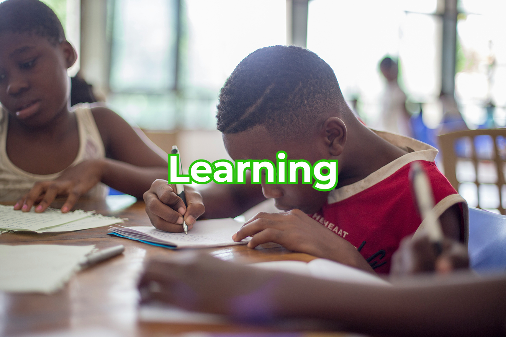
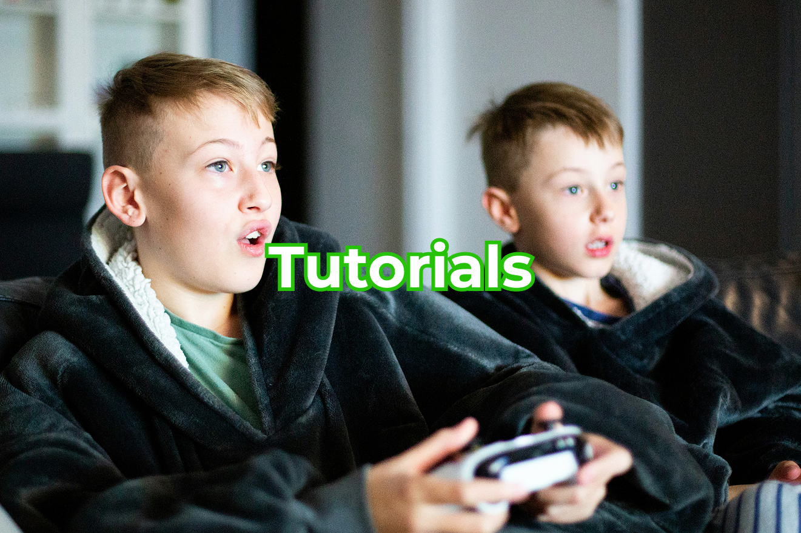

Her i kategorierne finder du de værktøjer for at kunne forstå spillet og hvordan du spiller det. Vi har en god samling fra hver kategori og giver en god fortælling gennem passende tempo og forståelse.

Under Learning lærer du hvad Minecraft gør for dig og for børn. Lær såsom hvordan børn gennem spillet, udvikler kreativitet gennem frihed for byg, logisk tækning ved brug af redstone og sociale egenskaber ved samarbejde gennem multiplayer!
Gå til side
Vil du være en Minecraft know-it-all? Under Tutorials kan du finde en masse videoer der kan give dig overhånd for hvordan du overlever første nat til du besejrer Ender Dragon!
Gå til side